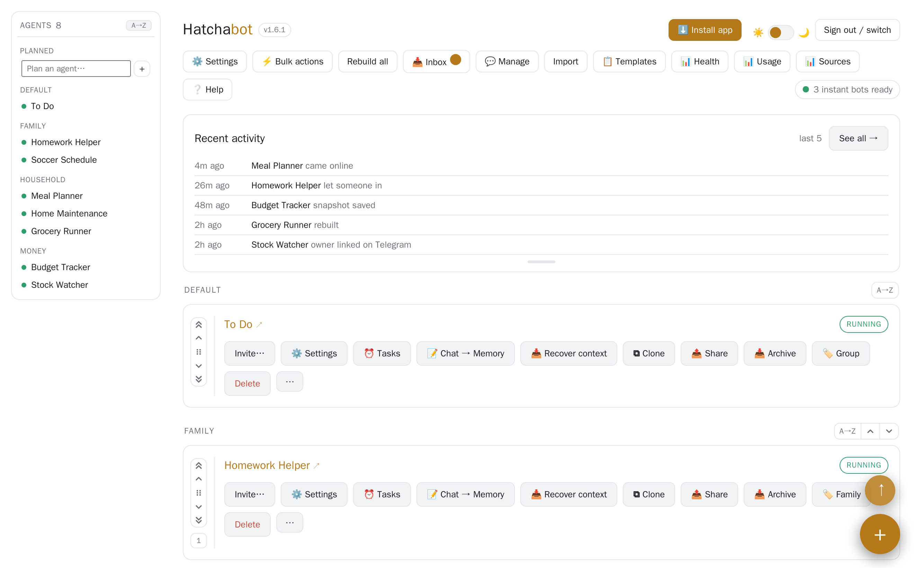
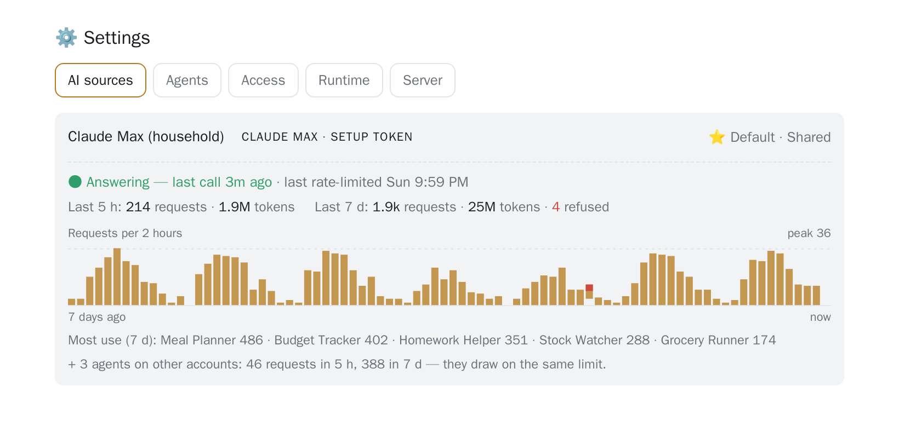

Many purpose-built agents · on hardware you own · thinking with the AI you choose · reachable by the people you let in · through Telegram · on one subscription.
the open-source agent runtime · one isolated container per agent · the front door everyone already has
The problem
You already pay for a model that can do almost anything. What you get is one assistant, in one app, from one company, for one person — whose memory of you is whatever that company decides to keep.
Open the app, type, close it, forget. The model is powerful; the container around it is a search box with a scroll bar.
Files on your disk with a job, a personality and a memory that grows for years — behind a contact your whole household can message.
The idea
A kitchen helper, a tax advisor, a homework tutor, a scheduler that reads its own inbox. Made in a minute: a name, a paragraph, a bot token.
Every agent is a container on your machine. Memory, credentials and history stay home. Pair it with a local model and nothing leaves at all.
Claude (subscription or API), Gemini or a local model — per agent, switchable live. Cheap models for simple jobs, the best for the ones that matter.
Invite family by link or QR. Talk to one agent privately or together in a group room, with memory shared or personal — and everyone told which.
The app everyone already has. Each agent is a real contact with a name and a face. Nothing to install, no accounts to create.
Not a chatbot but a control plane: health, usage, audit trail, backups, security posture, upgrades rolled out one agent at a time.
Principles · 1 of 2
Each one is a container with a persona, operating rules and a memory — plain files you can read and edit, snapshotted before every change:
SOUL.md · AGENTS.md · MEMORY.md
An agent survives restarts, rebuilds, model switches and moves between machines.
The agent writes durable facts as it goes. Save a conversation to memory, download its whole chat history, or recover the context of a thread that got reset.
Nothing important is trapped in a transcript.
Anthropic, Google, or a local server with no account at all — per agent, switchable live without a rebuild.
Group agents into classes and retune a whole tier in one place. Your agents outlive any provider's pricing decision.
Principles · 2 of 2
No app to ship, no accounts to run, no notification system to build. Bots are first-class in Telegram: deep links, group chats and per-agent allowlists, for free.
One container, one bot, one set of credentials per agent. Give an agent exactly the data it needs — a folder, a git repo, a Google account with “read mail but never send” — and nothing else.
A daily posture check names every agent that has both a wide audience and a powerful capability.
Snapshots before edits and rebuilds. Rollback on a failed move or deploy. A full audit timeline. Usage reported as tokens, not a made-up bill. Health probes that tell “listed as running” from “actually answering”.
Two deliberate choices
A Claude Max plan is a flat monthly fee. claude setup-token turns it into a credential Hatchabot keeps on your machine and hands to every agent — revocable, never a shared login.
The kids' tutor, the family planner, your own advisors: everyone gets their own agents, and you pay for one plan. Nobody else needs an AI account — they message the agents made for them.
Free, on every platform, and bots are a first-class feature. BotFather makes one in a minute; a free account can own 20, Premium 40, and every household member adds more.
The alternative — our own app, our own accounts, our own push notifications — would cost more than the whole rest of the product.
Features
| Capability | In practice |
|---|---|
| Create agents fast | A name, one paragraph and a bot token → a running, remembering agent in a minute. Clone one you like; import a shared template; keep a launchpad of planned agents. |
| Many humans, one agent | Private one-to-one threads with the same agent, or a shared room. Invite by link or QR. Shared or private memory, declared. |
| Choose the brain per agent | Claude, Gemini or a local model; switch the model live; classes for tiers; migrate a whole source at once. |
| Give agents accounts and data | Gmail, Calendar, Drive and Sheets per agent (with “no send”); read-only or writable folders; git repos it commits to — public repos need no key at all; per-agent secrets. |
| Schedule and react | Cron tasks, event-triggered tasks (a zero-cost check decides whether to wake the model), run-now tests. |
| Agents that consult each other | Grant an investing agent access to your tax and legal agents; it asks them mid-task, with scoped tokens, loop guards and rate limits. |
| Master → child lineage | A master agent's improvements distil into proposals that push to its children. |
| Move, copy, share, back up | Rehost to another machine in one step; download as one file; share as a template with no secrets; nightly backups with a restore drill. |
| Rebuild without fear | Rebuilds keep memory. Only a change of AI source resets a thread — and that offers to save memory first, and to recover the context after. |
The control panel

An example fleet — the names and activity are invented for this picture.
Agents grouped how you like, each with its actions one tap away, and a running account of what the house has been doing.
Every AI source reports requests and tokens for the last 5 hours and 7 days, names the heaviest agents, and raises a banner the moment calls start being refused.

Features · operating a fleet
Compared
A chat app is a place you go to talk to one assistant. Hatchabot is a staff of agents that live on your machine and come to you.
| Claude.ai / ChatGPT | Codex (and coding agents) | Hatchabot | |
|---|---|---|---|
| Shape | One assistant, one app, one person | One agent, one repo, one task at a time | A fleet of agents with jobs, for a household |
| Runs where | Their cloud | Their cloud or your terminal | Your machine (containers), over your private network |
| Memory | What the provider keeps; opaque | The repo and the session | Files you read, edit, back up; survives rebuilds and moves |
| Who can talk to it | You, in the app | You, in the terminal or a PR | Anyone you invite, on Telegram; private threads or group rooms |
| Choice of AI | That company's models | That company's models | Claude, Gemini, local — per agent, switchable live |
| Acts on its own | Limited scheduled tasks | When you run it | Schedules, events, and requests from other agents |
| Access to your things | Connectors the vendor chose | The repo | Per agent: a folder, a git repo, a Google account — limits you set |
| Cost | Per seat | Per token / per seat | One Claude Max plan powers every agent; local models cost nothing per token |
| Lock-in | Your history stays with them | The repo is yours; the service is theirs | Export, move machines, change provider — the agents are yours |
The honest caveat: the chat apps are polished, need no setup, and their models are excellent. Hatchabot doesn't compete with the model — it uses one (Claude by default). It competes with the app around the model: one assistant, one person, forgets you tomorrow. A coding agent with a git repo is one of the things you can make.
Compared
Every Hatchabot agent is an OpenClaw gateway. Hatchabot adds the layer OpenClaw deliberately leaves out: many installs, run as a fleet, by more than one person.
Plain OpenClaw is one process, one config, one workspace and credential set shared by every agent in it. Hatchabot gives each agent its own container, volume, bot token, tool policy and secrets.
The runtime image is pinned and rolled out per agent, candidate first — never “upgrade the gateway and hope every agent survives”.
Create, clone, rebuild, archive, restore, delete, move — with a snapshot before every change. In plain OpenClaw that's you, a shell and a directory.
Owners, members, invites, pairing approvals, group rooms, and memory people are told is shared or private.
One setup-token serves every agent; Google accounts attach per agent; secrets are write-only.
If you run one agent for yourself, plain OpenClaw is fine. Hatchabot is for when there are several, they matter, and other people talk to them.
How it works
Your familyTelegram on their phones Youweb app · CLI · management bot |
→ | Hatchabot control planeNode + SQLite on your machine registry · encrypted secrets · scheduler · health · backups · audit |
→ | Agent containerOpenClaw gateway · own bot · own volume Agent containerone per agent — dozens on one box Runnera second machine on your tailnet |
→ | AI sourcesClaude Max or API · Gemini · a local model Datafolders · git repos · a Google account |
Each agent's $HOME is a Docker volume: persona, memory, sessions, tools. The runtime image is shared, versioned, and swapped under an agent without touching the volume.
The web app lives on your machine; reach it from anywhere over Tailscale, never a port opened on your router. Telegram works from anywhere regardless.
TypeScript, MIT licensed, 965 automated tests and fifteen full audits. Tagged releases with notes; pre-built images for arm64 and amd64.
Built to be easy to run
Checks git, Docker and Node, offers to install what's missing, fetches the latest release and installs the background service.
Published for arm64 and amd64 with every release, so setup pulls the agent image instead of building it for twenty minutes.
The app walks you through connecting the AI, making the first Telegram bot and creating the first agent — each step checked as you go.
hatchabot doctorChecks Node, Docker, the image, the service, the database, disk, backups and Tailscale — and prints the fix for anything wrong.
Every release is a tag with notes. Deploying one restarts only the control plane; if it doesn't come up healthy, the previous release is put back.
Nightly sets of every agent, the registry and the key, kept for two weeks, with a restore drill that proves a set actually restores.
Get started
Make a Telegram bot. In Telegram, open @BotFather, send /newbot, and keep the token.
Get Claude ready. Install the Claude CLI, log in once, then run claude setup-token and keep that token too.
Install Hatchabot on the computer that stays on:
Open the app at http://localhost:8080. The wizard takes both tokens and creates your first agent.
Say hi on Telegram. It will still remember this conversation next year.
hatchabot.com · github.com/hatchabot/hatchabot · hello@hatchabot.com · MIT licensed